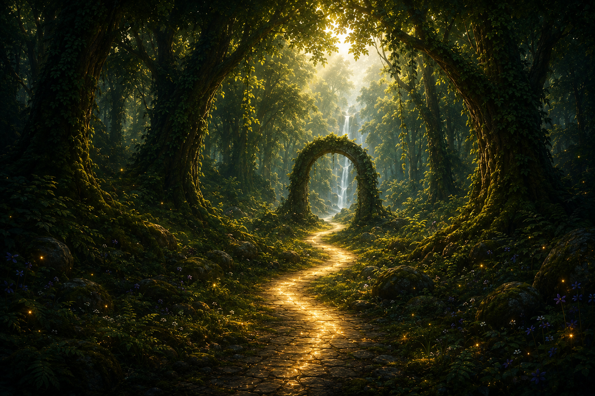
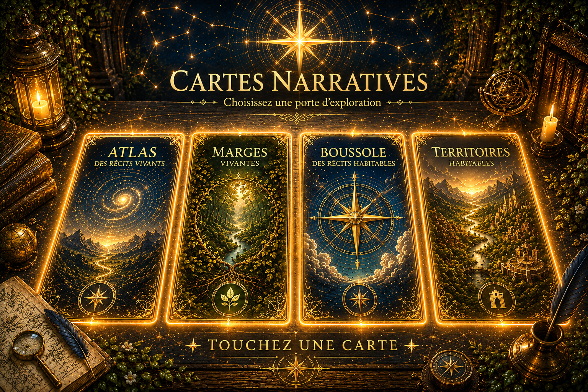
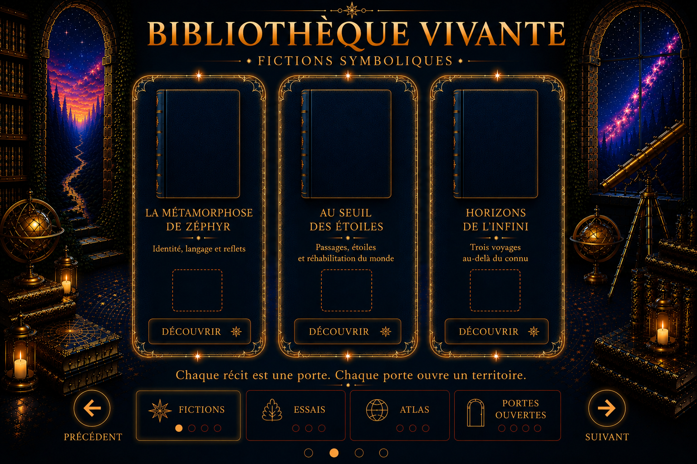
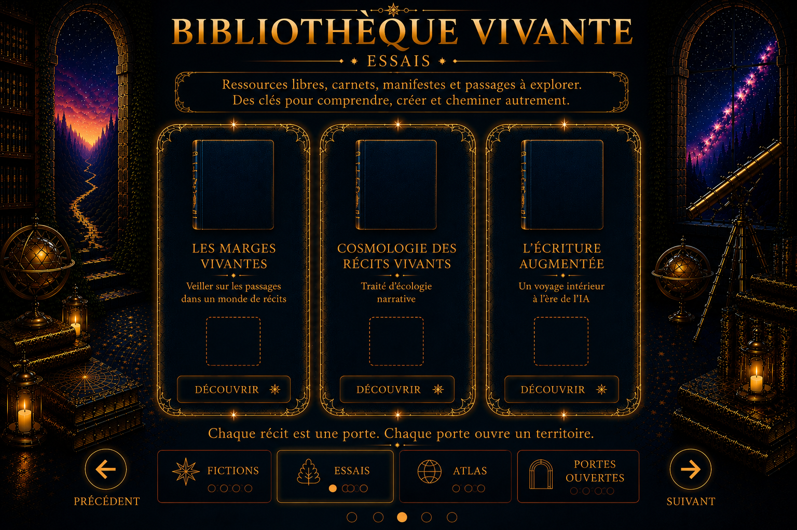
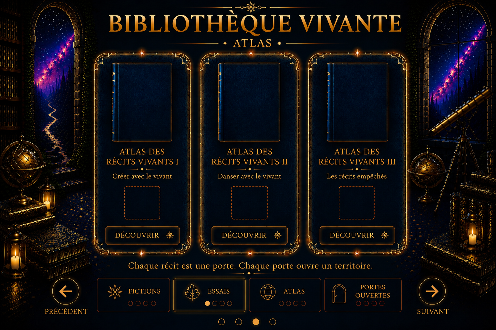
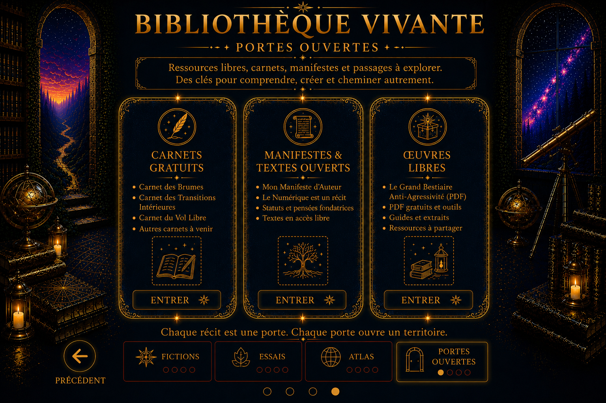
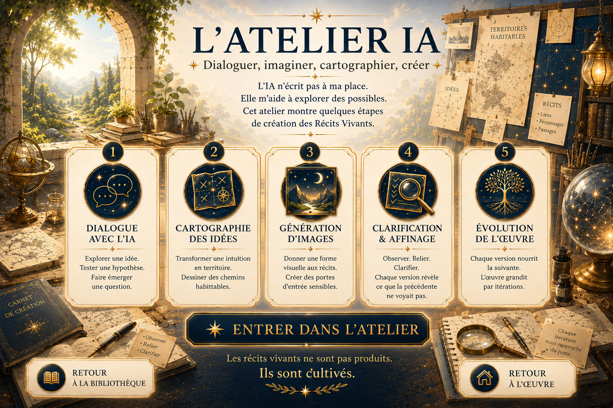
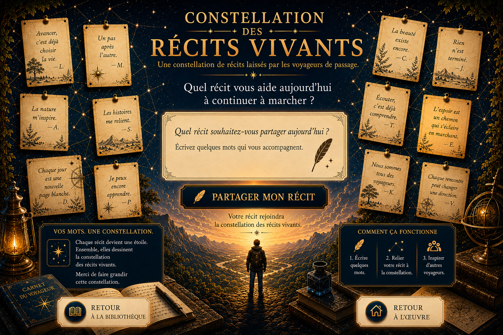
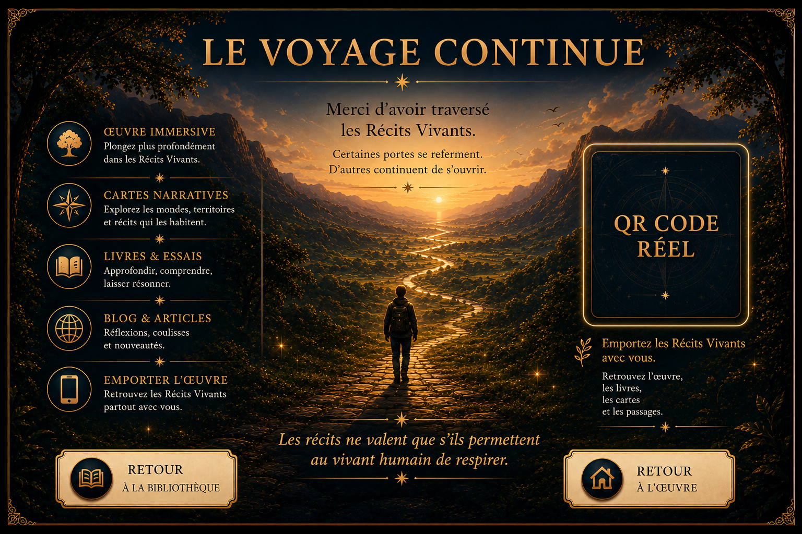

Ouverture de la bibliothèque vivante...
Une œuvre immersive de Zéphyr Avenel
Chaque récit ouvre une porte. Chaque porte conduit vers un territoire. Le voyage commence toujours par une première rencontre.
Il n'existe pas de bonne réponse. Choisissez simplement le paysage intérieur qui ressemble le plus au moment que vous traversez.
La Boussole Vivante








